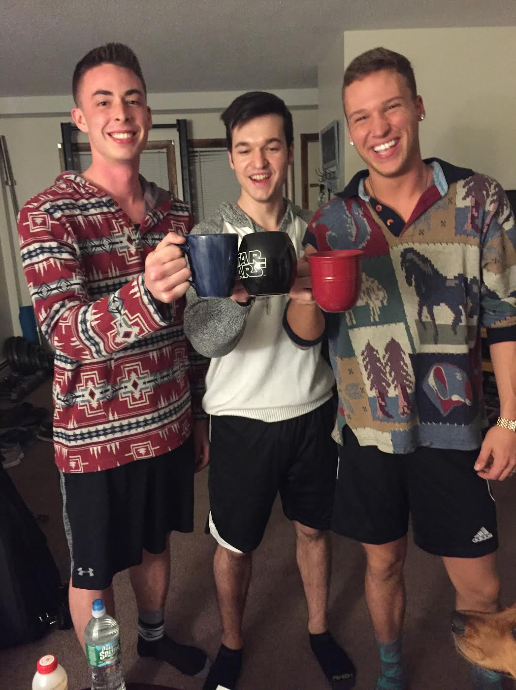
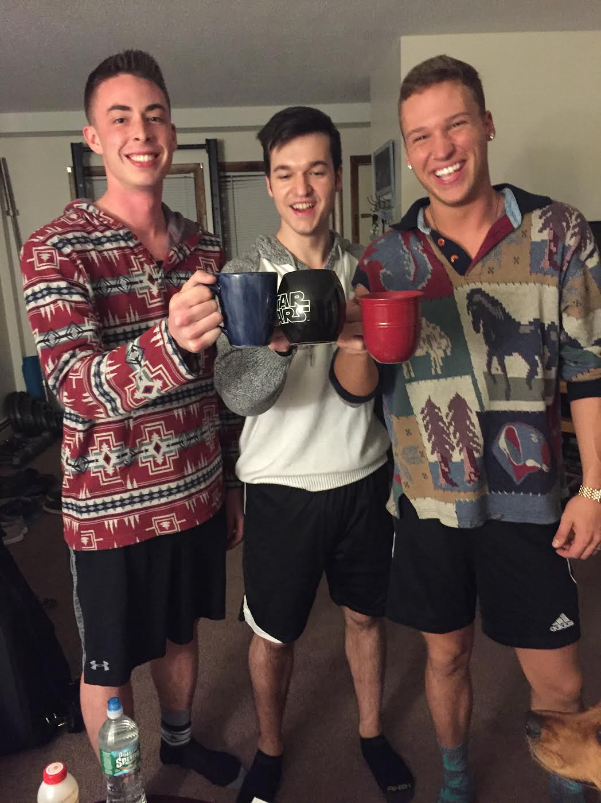
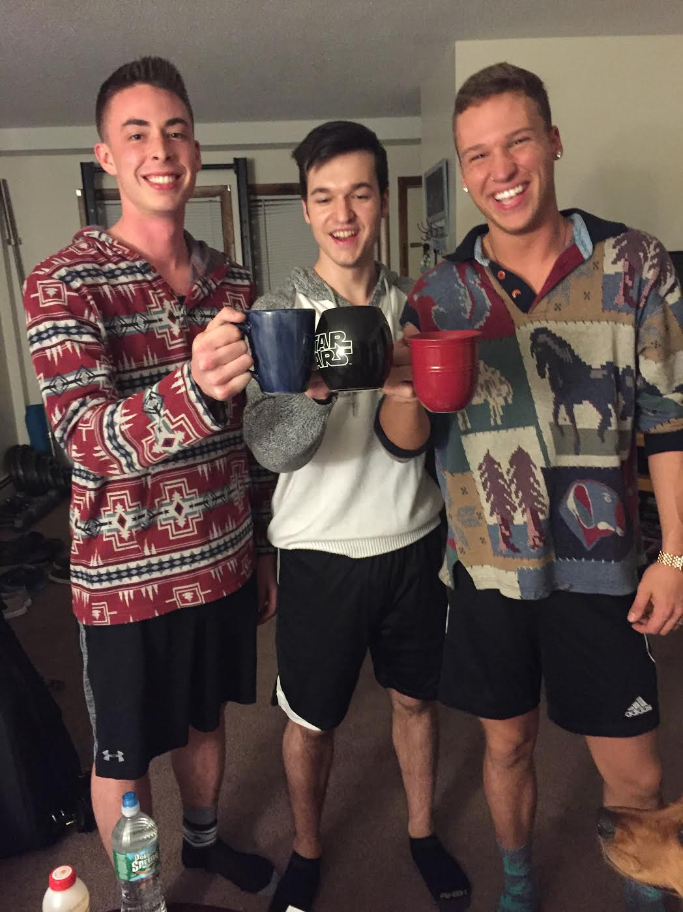

I have always been the type to have a few friends that I'm very close with rather than having a lot of friends who aren't so close. I consider my friends to be a part of my family, and I love my best friends, Tristan and Justin, like they were my brothers.
Tristan and I have been friends since we were in 3rd grade. We grew up together, went to school together, ran track together, worked together, partied together and made a lot of other awesome memories along the way. A little over a year ago, we got our first apartment and had a great time there as well. Since then, Tristan has moved to Portland with his girlfriend and is bartending at a restaurant in the Old Port. Tristan is a talented artist and was recently accepted to school in Portland for Marketing and Graphic Design.
Justin, on the other hand, has only been a part of my life since November of 2015. We met while working together at High Tide and actually didn't like each other at first. As we got to know each other outside of work, we quickly realized that we were like long-lost brothers. Since then, he has become one of my closest friends. Justin studies Business at Husson University and works at Eastern Maine Medical Center. He is a gifted musician and has auditioned for The Voice and American Idol.
Despite the fact that the three of us are busy and don't see each other very often anymore, I know that these two are always there for me if I need them, and I can always rely on them for a good time.
